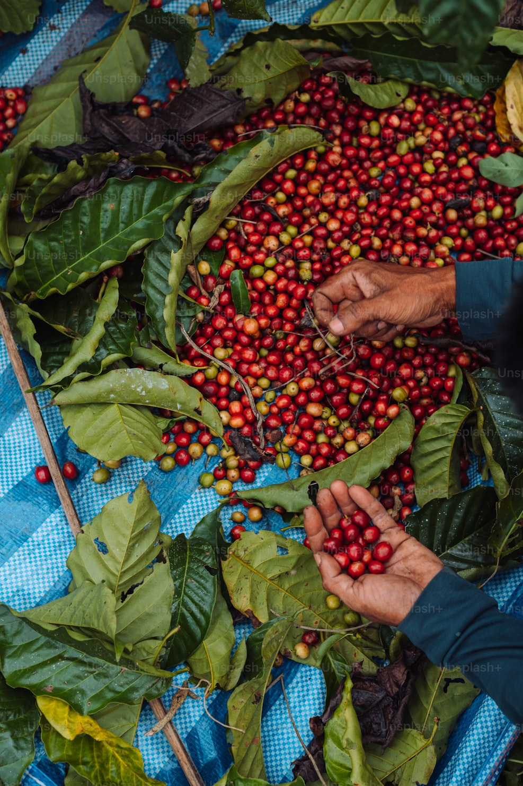
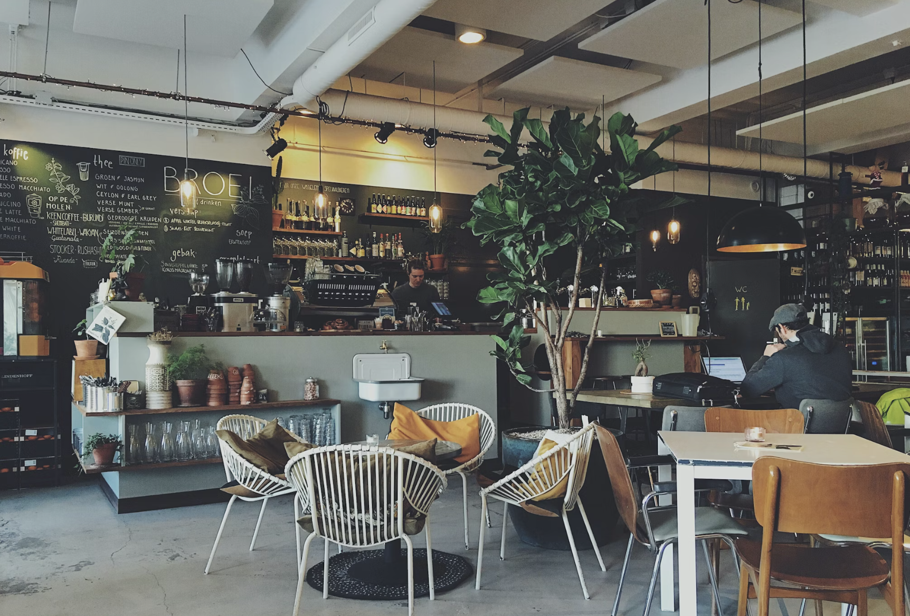
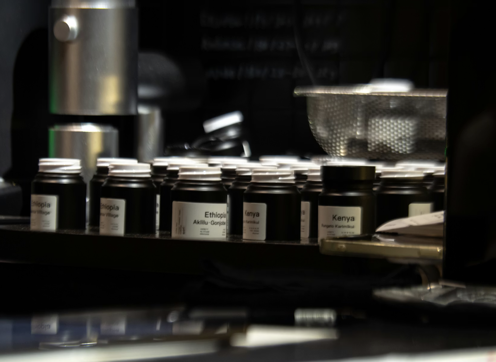

![[Fondo de granos de café]](https://images.unsplash.com/photo-1495474472287-4d71bcdd2085?auto=format&fit=crop&q=80&w=2070)
Explora la ciencia y la pasión detrás de cada taza.
Explora la ciencia y la pasión detrás de cada taza.
![[Granos de café antiguos]](https://images.unsplash.com/photo-1559056199-641a0ac8b55e?auto=format&fit=crop&q=80&w=800)
La historia del café comienza en las tierras altas de Etiopía, donde según la leyenda, un joven pastor llamado Kaldi notó que sus cabras se volvían inusualmente energéticas tras comer las cerezas de un arbusto específico.
Desde los monasterios sufíes en Yemen hasta las sofisticadas cafeterías de Venecia, el café ha sido el motor de revoluciones intelectuales y el compañero inseparable de la cultura moderna.
La leyenda de Kaldi y sus cabras energéticas en las montañas abisinias.
Nacen las primeras cafeterías en Yemen y se extiende por toda Arabia.
Mercaderes venecianos introducen la bebida, conquistando Londres y París.
Brasil y Colombia se posicionan como líderes mundiales en producción.
El "Cinturón del Café" alberga naciones cuya economía y cultura giran en torno a este grano dorado.
![[Café de Brasil]](assets/img/cafebrasil.png)
Es el mayor productor del mundo, representando el 35-40% de la producción global. Sus regiones clave incluyen Minas Gerais y São Paulo.
Dato curioso: Tan grande es su producción que el precio mundial del café suele fluctuar basándose en el clima de Brasil.
![[Café de Vietnam]](assets/img/cafevietnam.png)
Segundo productor mundial y líder indiscutible en café Robusta, fundamental para la industria del café soluble y mezclas.
Dato curioso: El café tradicional de Vietnam se sirve con leche condensada debido a la histórica falta de leche fresca.

Mundialmente famoso por su calidad suprema. Su cultivo se realiza en terrenos montañosos escarpados que requieren recolección manual.
Dato curioso: El "Paisaje Cultural Cafetero" de Colombia es Patrimonio de la Humanidad por la UNESCO.

Su geografía volcánica aporta un perfil terroso único. Sumatra y Java son sus islas más famosas en la industria cafetera.
Dato curioso: Indonesia es el hogar del Kopi Luwak, uno de los cafés más caros del mundo.

La cuna genética del café. Aquí el café crece de forma silvestre y cada región (Yirgacheffe, Sidamo) tiene un sabor distinto.
Dato curioso: La ceremonia del café es un ritual social clave que puede durar varias horas.
Cuerpo y textura sedosa mediante inmersión total.
Intensidad y crema lograda bajo alta presión.
Resalta la acidez y notas frutales con claridad suprema.
![[Taza de café humeante]](https://images.unsplash.com/photo-1495474472287-4d71bcdd2085?auto=format&fit=crop&q=80&w=800)
![[Barista preparando café]](https://images.unsplash.com/photo-1442512595331-e89e73853f31?auto=format&fit=crop&q=80&w=800)
![[Cafetería acogedora]](https://images.unsplash.com/photo-1501339847302-ac426a4a7cbb?auto=format&fit=crop&q=80&w=800)
![[Latte Art detallado]](https://images.unsplash.com/photo-1534778101976-62847782c213?auto=format&fit=crop&q=80&w=800)
![[Taza blanca con café]](https://images.unsplash.com/photo-1511920170033-f8396924c348?auto=format&fit=crop&q=80&w=800)
Referente nacional por su tostado preciso y su atmósfera minimalista en Lavapiés.
Laboratorio de ideas y tostadores pioneros que elevaron el estándar del café.
Ubicado en el Mercado Central, ofrece una experiencia sensorial única.
El proyecto de Javier García que mima cada grano frente al río Urumea.
¿Tienes alguna duda, quieres saber más? Escríbenos o suscríbete para recibir nuestras novedades artesanas.